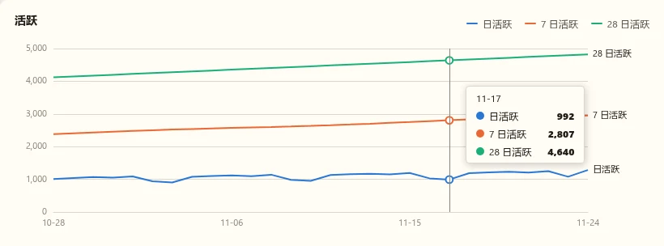
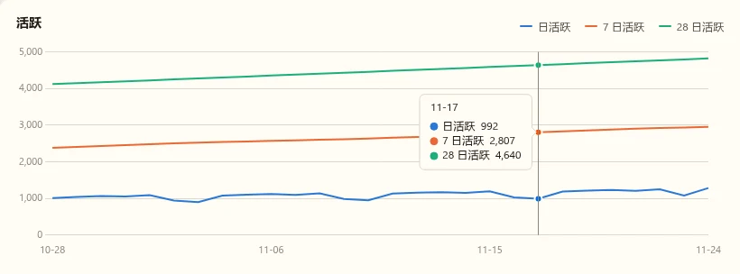
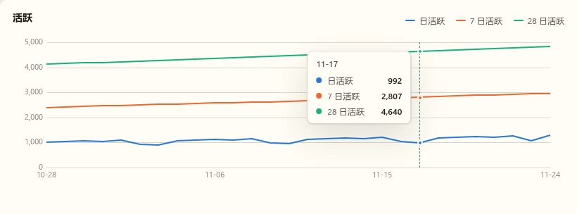

官方站前端 第 4 轮：图表库与看板
看板的图用哪个图表库？
推荐 ECharts：提示框、十字线、线尾的名字都自带，要自己写的最少；它最大，但看板只有管理员打开，做成单独的一块，普通用户不会下载到。


ECharts 6.1.0
| 这张图的下载体积 | 178 KB |
|---|---|
| 最近一次发布 | 2026-05-19 |
| 提示框 | 自带，是页面元素，可以照应用里浮层的样子画 |
| 十字线 | 自带 |
| 线尾写名字 | 自带 |
| 这张图的代码 | 57 行 |


Chart.js 4.6.2
| 这张图的下载体积 | 56 KB |
|---|---|
| 最近一次发布 | 2026-11-23 |
| 提示框 | 自带，画在画布上，只能调颜色与字体 |
| 十字线 | 没有，图上这条是自己写的 |
| 线尾写名字 | 没有，要自己画 |
| 这张图的代码 | 100 行 |


uPlot 1.6.32
| 这张图的下载体积 | 24 KB |
|---|---|
| 最近一次发布 | 2025-03-14 |
| 提示框 | 没有，图上这个是自己写的 |
| 十字线 | 自带 |
| 线尾写名字 | 没有，要自己画 |
| 这张图的代码 | 76 行，另加提示框的样式 |
看板照图做吗？
推荐同意：排法与第 1 轮相同，两张趋势图换成了真的图表（这张用 ECharts 画），三条线各用一种颜色，鼠标停在哪一天就显示那一天的数。

还没定、后面的轮次再看
| 事项 | 现在图上是什么 |
|---|---|
| 看板下面的“错误与崩溃”一块 | 还没画，定了图表库之后照同样的画法出 |
| 红色印章里的字 | 临时写的 NB |
| 隐私政策与服务条款两页 | 等条款的文字起草后再排 |
已定
- 主页只做登录入口；旁边留一行产品说明与隐私政策、服务条款的链接
- 管理员登录后先看统计看板；看板首屏按第 1 轮图上的排法
- 普通用户登录后直接进账号页
- 登录、注册、同意条款、授权确认与公开页适配手机；管理面板只做桌面宽度
- 第一版界面只有中文
- 全站用默认配色，只有登录页这一组画成稿纸（第 1 轮）
- 注册、同意条款、授权确认与登录页用同一张稿纸（第 2 轮）
- GitHub、Google 是登录与注册表单下面的两个图标（第 3 轮）
- 账号页一页到底、没有横幅；没有邮箱的账号只在邮箱那一格与目录里标出（第 3 轮）
- 列表页用同一个带工具条与分页的数据表格，做成 nb-ui 的通用组件（第 3 轮）